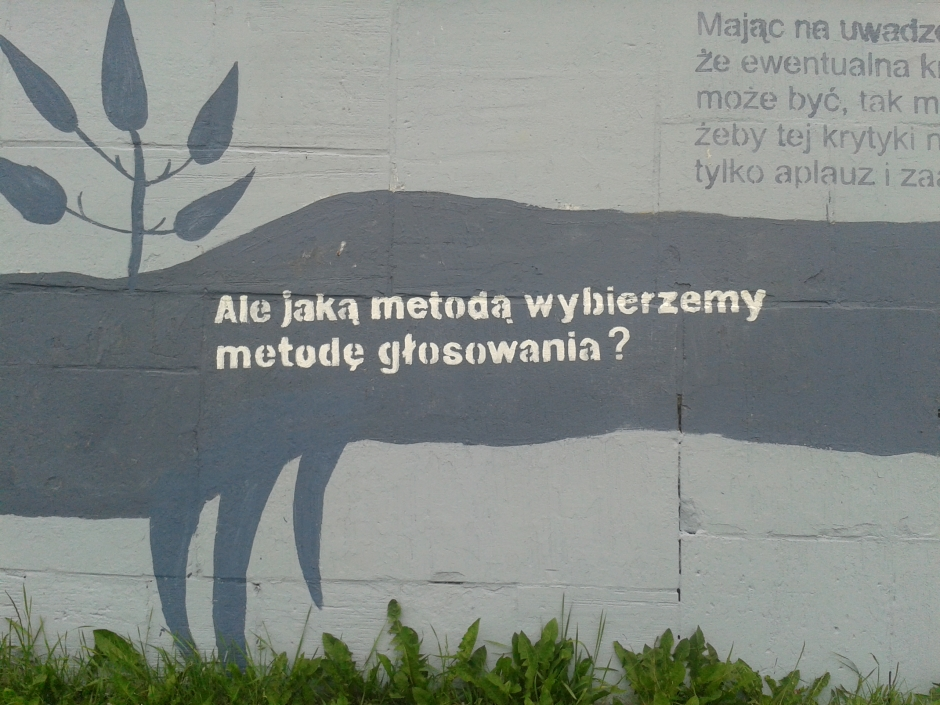

Każdy głos się liczy!
Jak losowano urzędników w starożytnych Atenach, a jak wybierano dożę w średniowiecznej Wenecji? W jaki sposób konklawe dokonuje wyboru papieża? Jak wyłania się najlepszego w zawodach łyżwiarskich, a jak zwycięzcę Konkursu Chopinowskiego? Czy wynik wyborów prezydenckich może zależeć od rodzaju systemu wyborczego, a skład parlamentu od wielkości i kształtu okręgów wyborczych?
Jak wybieramy posłów do Parlamentu Europejskiego, a jak decyzje podejmuje Rada Unii Europejskiej? Czy statystyczna analiza protokołów wyborczych może potwierdzić przypuszczenia o fałszowaniu wyników? Bogato ilustrowana książka przystępnie odpowiada na te pytania przedstawiając szeroki wachlarz zagadnień dotyczących zbiorowego podejmowania decyzji i dokonywania wyborów w każdej dziedzinie życia.
 Mural na wybrzeżu Wisły w Toruniu, zdjęcie z czerwca 2013, fot. K. Życzkowski